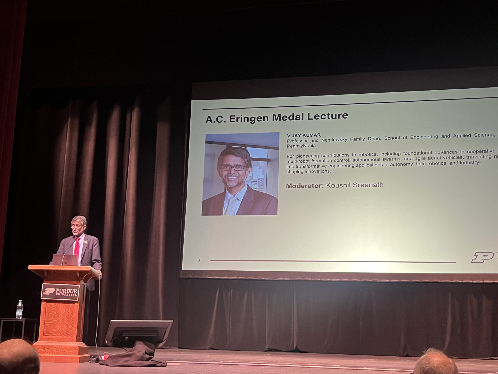
For pioneering contributions to robotics.
Including Foundational advances in cooperative manipulation, multi-robot formation control, autonomous swarms, and agile aerial vehicles, translating rigorous theory into transformative engineering applications in autonomy, field robotics, and industry-shaping innovations.
The A.C. Eringen Medal is awarded by the Society of Engineering Science in recognition of sustained outstanding achievement in engineering science. The recipient delivers the Eringen Medal Lecture at the Society’s annual meeting and becomes a lifetime member upon receipt of the medal.
See the past A.C. Eringen Medalists.
Speakers are former PhD students and postdocs of Vijay.
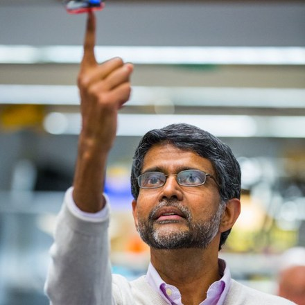
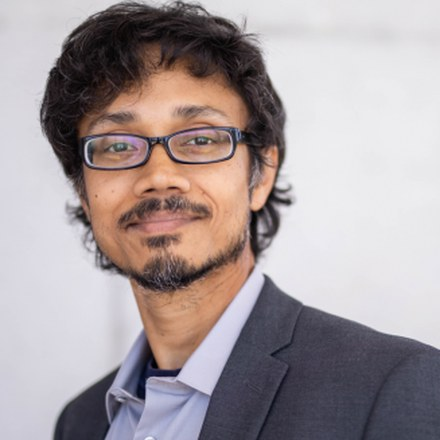
Graphs are ubiquitous in representation of robotic and networked systems. A natural higher-dimensional extension of graphs are simplicial complexes. Algebraic constructions on simplicial complexes allow one to reason about its higher-order topological features. In this talk I will present a collection of recent and past works that outline the use of algebraic topology in optimization, planning and control of networked and robotic systems. I will start with a recent research direction on topology control of robotic swarms. I will then describe the application of differential topology and homotopy theory to multi-path planning for robotic systems -- a work that I started as a graduate student under Prof. Vijay Kumar. Recent extensions of this line of research has enabled reasoning not only about the topology, but also about the geometry of the underlying configuration space in context of multi-path planning. I'll also outline some recent work on optimal path planning in simplicial complexes, and describe application of these tools to planning for spatial systems involving cables.
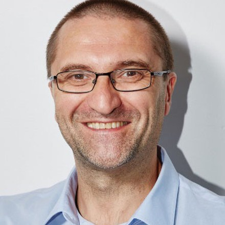
Many current applications, such as dexterous robotic manipulation, involve high-dimensional and partially known dynamical systems, which require machine learning techniques for motion planning and control. Ensuring safety and incorporating specifications given in rich, natural language within a learning-based system are challenging problems that received a lot of attention recently. In this talk, I will show how techniques based on control barrier and Lyapunov functions can be combined with temporal logics and reinforcement learning to address these challenges. I will use examples from robotic manipulation and autonomous driving.
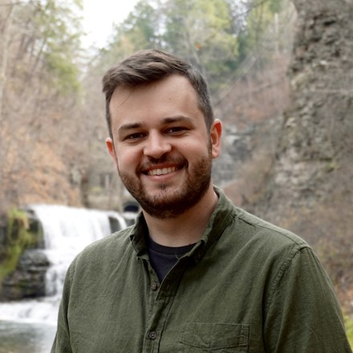
Symmetry has long played a role in enabling high-dimensional robotic systems to operate autonomously in complex environments and under previously unseen conditions, despite stringent computational constraints. Nonetheless, the classical notion of symmetry is too rigid to be applied to many real-world robotic systems, where symmetry may be “broken” by external forces or confined to only a portion of the overall system. In this talk, we describe recent progress in formulating relaxed notions of symmetry that accommodate a broader class of systems while retaining algorithmically useful structure. These more flexible properties enable the reduction of high-dimensional symmetry groups in the dynamics of complex robotic systems, underpinning efficient learning algorithms suitable for control tasks such as trajectory tracking. In ongoing work, we study how these flexible notions of symmetry are preserved (or destroyed) under various types of composition between subsystems. Together, these methods will enable next-generation autonomous systems of diverse morphologies and limited computational resources to move capably through their surroundings.
Multi-robot systems enable us to interact more richly and extensively with the world we live in. Robot teams can cover large regions of physical space, perceive their environments, and synthesize measurements of varying spatiotemporal fidelity to build a consistent picture of the many complex dynamic processes surrounding them. However, achieving reliable autonomy in natural, unstructured environments remains fundamentally difficult because robot dynamics tend to be tightly coupled to those of the environment, models are often incomplete, and data is costly to obtain. Advances in data-driven methods have opened new pathways to address these challenges, but purely learned models can lack the interpretability, generalizability, and physical fidelity that robust autonomy demands. In this talk, I argue that structure-preserving approaches to learning, methods that embed known physics and respect underlying mathematical structure, are essential for bridging this gap. I will present recent results on knowledge-based neural ordinary differential equations, Koopman operator methods for active flow field learning, and structure-preserving machine learning for source localization. I will show how preserving physical structure leads to models that are more data-efficient, more generalizable, and better suited to real-time planning and control for scalable autonomy in multi-robot environmental monitoring applications.
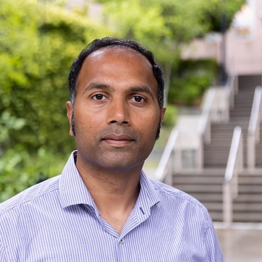
Hybrid systems with both continuous and discrete time dynamics pose significant challenges for learning. Traditional approaches often rely on mode-based learning, which struggles with mode switching and discontinuities in the system's flow. In this talk, I will introduce a novel method that learns a continuous neural representation of hybrid systems without the need for trajectory segmentation, event functions, or mode switching. The core idea is to treat the reset map as a glue that connects the state space at the guard surface, transforming it into a piecewise smooth quotient manifold. Leveraging differential topology, our method simultaneously learns a singularity-free neural embedding and the continuous flow within it.
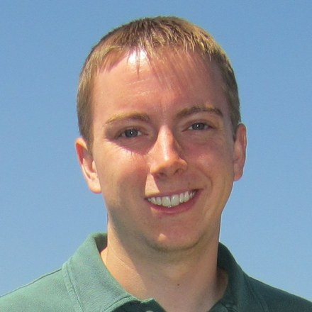
Traditional robotics often utilizes a Sense-Plan-Act paradigm, where precision is achieved through hand-coded controllers and structured environments. However, these systems often lack "Physical Commonsense", or an intuitive understanding of complex interaction forces, object deformation, and recovery that is required to thrive in an unstructured world. This talk will discuss how the team at Generalist AI has developed foundation models that learn directly from large-scale physical interaction data. By grounding AI in physical experience, we are heading toward generally intelligent machines capable of mastering the complex, messy realities of the physical world. Our system utilizes Harmonic Reasoning: a novel approach that enables large-scale models to simultaneously process asynchronous sensing and acting tokens in real-time, bypassing the need for slow System 1/System 2 hierarchies. We have observed scaling laws that follow the trends of LLMs as well as a phase transition at the 7B parameter threshold. Our GEN-1 system has demonstrated the ability to achieve task mastery measured by reliability, speed, and improvisational intelligence, using as little as one hour of robot-specific data.
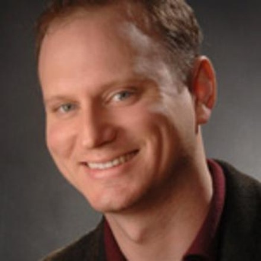
Vision-Language-Action (VLA) policies have recently emerged as a promising paradigm for generalist robot autonomy. However, with the current state of practice, VLAs sometimes suffer from strong overfitting after fine-tuning, while in other cases they seem to retain strong generalization capabilities. I will present work that aims to explain this overfitting behavior as arising from an inductive bias in these models toward memorizing a lookup table representation of actions. I will present methods for mitigating this overfitting behavior. I will also discuss our adaptation of Sparse Auto Encoders as a diagnostic tool to inspect the latent representations of VLA models, and to assess whether a trained model has learned generalized skills or rote memorized action sequences. I will close with my perspectives on the challenges and opportunities facing generalist robot policies.
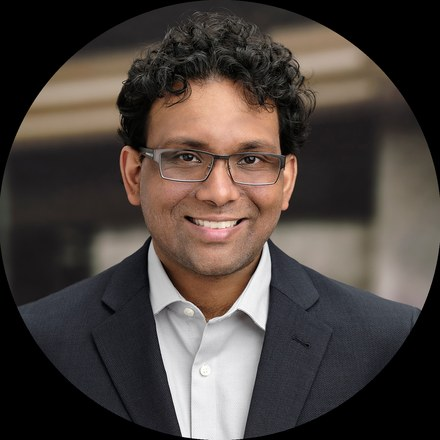
Foundation models are changing how robots interpret language, scenes, and tasks, but robust autonomy in unstructured environments still depends on deciding what information to gather and how to use it. In this talk, I will frame active information gathering as a bridge between foundation-model reasoning and reliable embodied decision-making. I will discuss recent work on language-guided heterogeneous robot teaming, and hierarchical language-embedded mapping to support semantic planning and collision-free navigation in unknown environments. Building on these, I will outline recent research that explores moving beyond using foundation models directly as semantic priors and instead learn operational constraints from experience, such as traversability, visibility, affordances, risk, and task feasibility. This perspective uses active perception as the process of acquiring task-relevant information, updating experience-grounded constraints, and applying them to act robustly in dynamic, uncertain, and open-world scenarios.
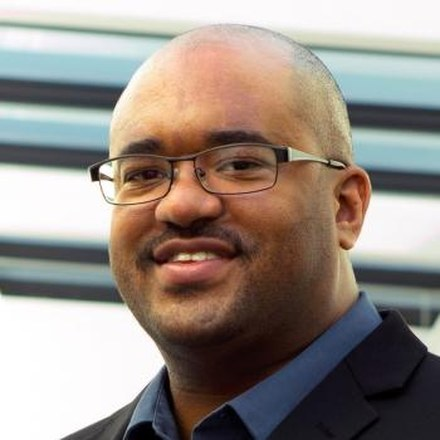
Humanoid robots have recently gained significant attention, with compelling demonstrations of dynamic locomotion and athletic behaviors such as walking, running, and gymnastics. However, for these systems to achieve widespread adoption and real-world impact, they must address critical labor shortages in domains such as caregiving, agriculture, and manufacturing. A central challenge lies in endowing robots with both the dexterity and the contextual knowledge required to perform tasks that are intuitive for humans yet remain highly complex for robotic systems. These tasks often involve contact-rich manipulation, partial observability, and nuanced decision-making. In this talk, we will examine key catalyst challenges spanning tactile sensing for robust interaction, imitation learning for skill acquisition, embodiment and morphology for task alignment, and the development of steerable vision-language-action (VLA) models for generalizable control. We will also discuss emerging design principles and trade-offs that will shape the next generation of robotic hands and manipulation systems.
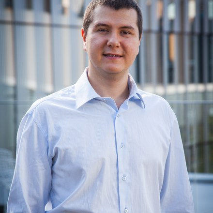
This talk presents recent advances in robot mapping and planning that integrate geometric and semantic scene representations with autonomous robot decision-making. The talk discusses signed distance function (SDF) mapping from point cloud data as well as implicit maps that encode features aligned with modern vision-language models. These representations enable robots to reason about geometry, semantics, and task objectives in task and motion planning, exploiting geometric structure to accelerate trajectory generation and vision-language grounding to achieve long-horizon task execution.
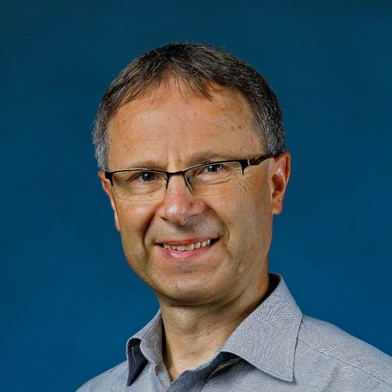
For robots to be functional in a human environment, it is essential that their behavior feels comfortable to humans. That is, robots must perceive clues from various modalities, generate legible actions, and either take initiative or follow humans as appropriate. This talk explores the design of robot control policies for a human-robot collaborative manipulation task. In particular, we focus on the case where two participants need to negotiate where to move the object they hold when the goal destination is not uniquely specified, and who should lead the motion. Our work is motivated by the ability of humans to communicate the desired destination of motion through back-and-forth force exchanges. Inherent to these exchanges is also the ability to dynamically assign a role to each participant, either taking the initiative or deferring to the partner's lead. We propose a hierarchical robot control framework that enables a robot to communicate a motion destination to a human collaborator and to respond to their actions. The control architecture is loosely based on the strategy observed in human-human interactions. The framework is validated by a human study.
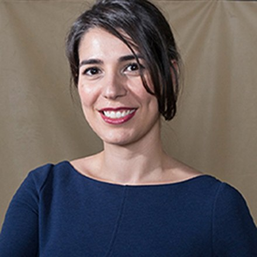
While high-level coordination algorithms for robot swarms often assume idealized conditions, the transition to real-world deployment requires addressing the complex, often non-linear physical interactions that occur, for example, due to wind, payloads, or in close-proximity flight. This talk presents a multi-layered approach to building resilient autonomous systems by integrating quantitative physical modeling with robust, safe control strategies. I will first present our recent quantitative modeling of static and dynamic downwash interactions in high-density quadrotor teams, characterizing how these aerodynamic forces act as significant, state-dependent disturbances. To address these disturbances on resource-constrained hardware, we demonstrate the efficacy of on-board sliding mode control for nano-quadrotors (Crazyflies), providing high-frequency, robust disturbance rejection. Finally, we bridge the gap to certifiable safety using Neural Control Barrier Functions (NCBFs) and online learning-enhanced high-order adaptive safety control. These methods allow multi-robot teams to maintain rigorous safety certificates even under aerodynamic uncertainty, paving the way for more robust and reliable autonomous systems in society.
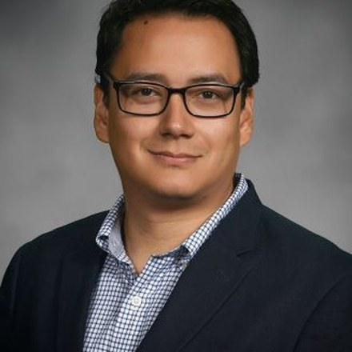
Traditional multi-robot systems are designed to avoid physical contact and collisions. In our research, we are guided by a different perspective: exploiting physical interaction between robots and the environment as a mechanism to enhance robotic capabilities. In this talk, we will discuss our research trajectory spanning dynamical systems, adaptive control, and model-based reinforcement learning, with applications in aerial robotics and aggressive autonomous driving. A central challenge in these domains is achieving stable behavior while learning quickly from limited data. The talk will highlight recent advances in cooperative transportation, aerial object manipulation, shape adaptation using multiple robots, and navigation in extreme and uncertain environments.
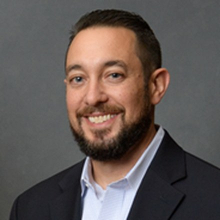
This talk will highlight the design of the Purdue Agricultural Robot or P-AgBot. The P-AgBot is an autonomous mobile robot design for in-row and under-canopy monitoring and physical sampling. The design of the P-AgBot's novel sensor suite and physical sampling modules will be presented along with its autonomous navigation stacks (P-AgNAV), ag-specific simultaneous localization and mapping routines (P-AgSLAM and CROP-LO), physical sampling module (P-AgSAMPLE), and the Deployment & Reading of In-ground Low-cost soil moisture Logging sensors (DRILL) platform. Finally, the design of a novel autonomous trailer to enable P-AgBot fleet operations will be presented.
Autonomous robots face a deceptively simple question: what do they actually need to know about their situation in order to act well? This talk argues that answering it, in principled and domain-specific ways, is one of the central challenges in embodied intelligence. Two case studies on robot navigation will demonstrate complementary interpretations of the question and how asking it can lead to insights across multiple problem scales. The first case study is on an individual robot navigating in human-populated spaces, where it must perceive, model, and predict the behavior of people around it to move with social competence. However, the challenge is not just perception, it is knowing what kind of model of the world is sufficient for competent action. We address this by developing probabilistic models of human intent that allow robots to anticipate crowd behavior, enabling navigation that is socially aware. The second case study is on deploying a multirobot system, where one wants to know how to select a team for a given environment or design the environment for a given team. We apply dimensionless variable analysis to compress high-dimensional team and task parameters into compact, interpretable predictors of performance. This approach generalizes across diverse problem classes.
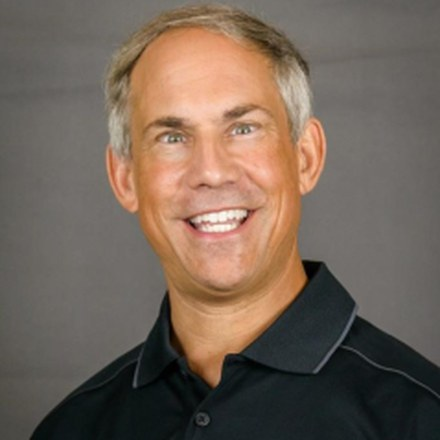
Wearable robotics has the potential to transform health, rehabilitation, and occupational safety by directly supporting human movement and improving worker safety. At the Human Machine Integration Laboratory at Arizona State University, our research focuses on the design and development of robotic systems that integrate with the human body to improve mobility, enhance performance, and reduce injury risk. Early work in the laboratory focused on robotic prosthetics and orthotic devices, particularly at the ankle, to improve gait and restore more natural movement for individuals with mobility impairments. More recent work has expanded into wearable exoskeletons for industrial and occupational applications. These devices are designed to reduce the physical demands placed on workers, improve safety, and help prevent musculoskeletal injuries during repetitive or strenuous tasks. In parallel, the laboratory is developing new systems to support upright human mobility, with the goal of helping people move more efficiently, safely, and independently.
Dynamic shape-morphing soft material systems are widespread in living organisms and increasingly important in soft robotics, flexible electronics, and smart medicine. Although soft materials with responsive components can switch between prescribed shapes, they generally lack the continuous and reprogrammable morphing capabilities needed to replicate many natural processes. A key challenge is the ability to redefine target shapes after fabrication, particularly when complex physical behavior and environmental disturbances limit the effectiveness of deterministic models for inverse design and control. Here we present a mechanical metasurface formed by a matrix of filamentary metal traces, actuated by reprogrammable distributed Lorentz forces generated by electrical currents in a static magnetic field. This system enables rapid, complex dynamic shape changes, with response times below 0.1 s. By integrating in situ stereo-imaging feedback, digitally controlled actuation, and optimization-based control, the metasurface can follow a self-evolving inverse design strategy to achieve a broad range of three-dimensional target shapes with high precision. It can also maintain performance in the presence of intrinsic and extrinsic perturbations. These concepts establish a data-driven framework for dynamic soft matter with capabilities beyond conventional responsive materials.
“How do we combine the power of AI with the mathematical and physical structure we know is essential for reliable behavior in the real world?”
One question I kept coming back to throughout the day. In different ways, so many of your talks addressed it, and the conversations at the bar reinforced the exciting times we live in. For those of you who believe that AI makes it difficult to exercise your brain, this article by a chess grandmaster is reassuring.